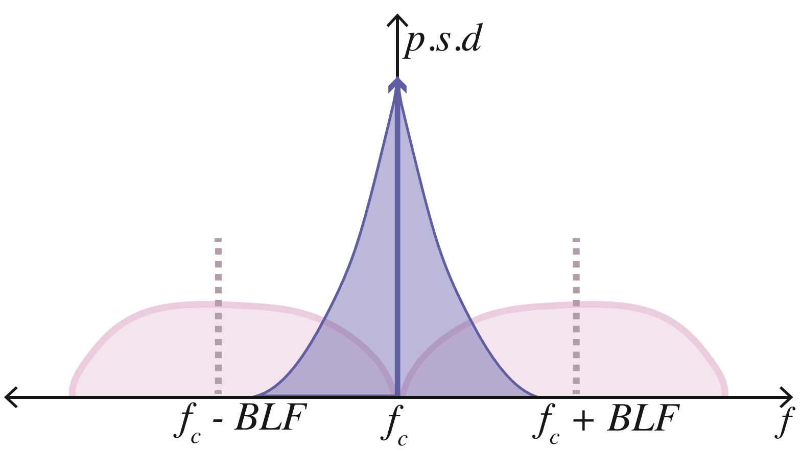
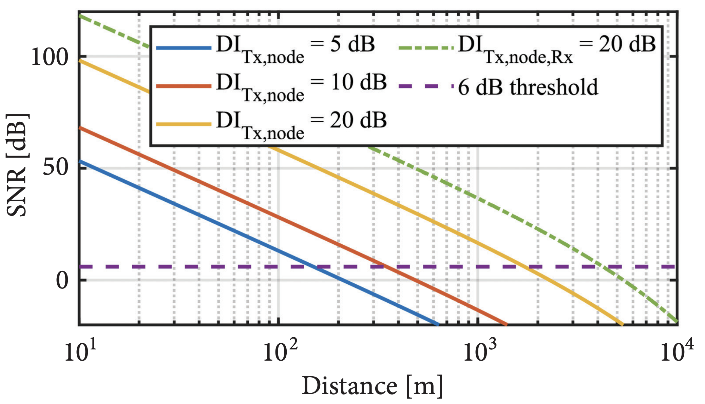
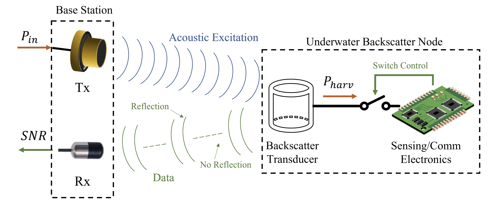
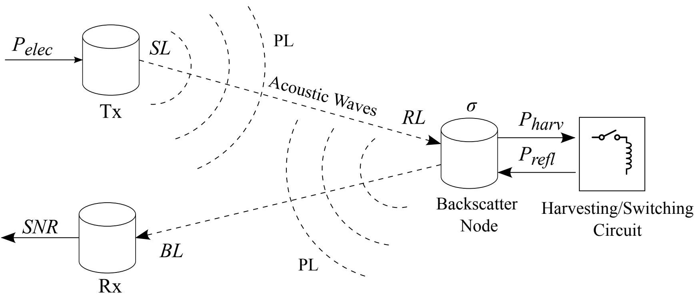
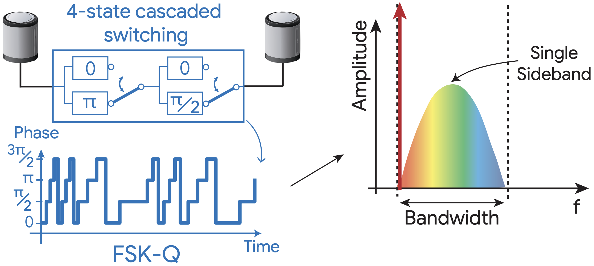
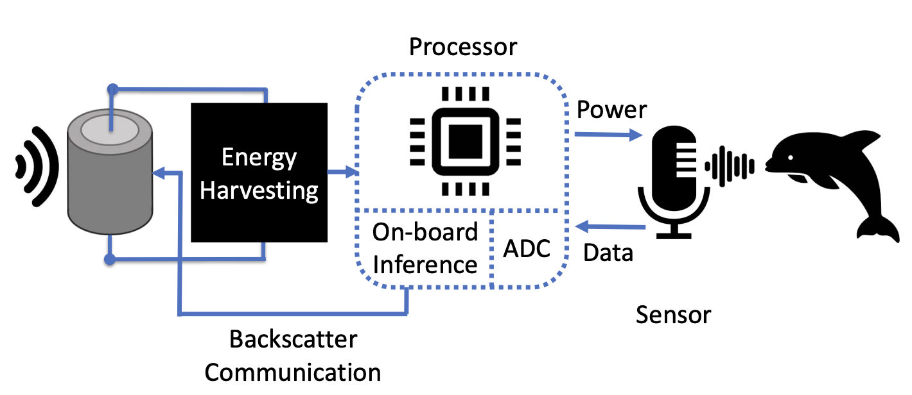
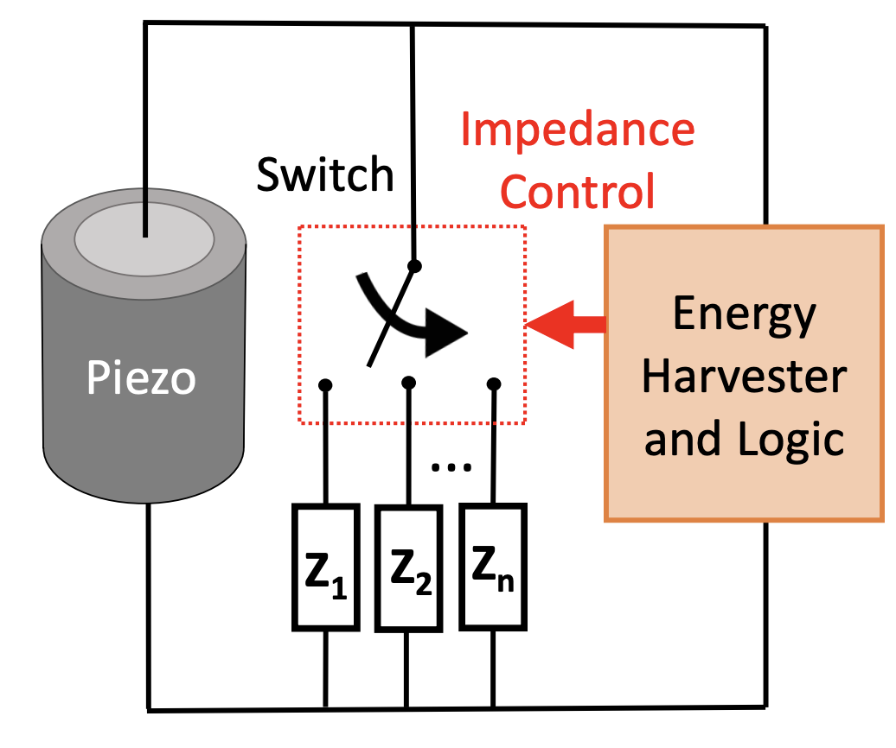
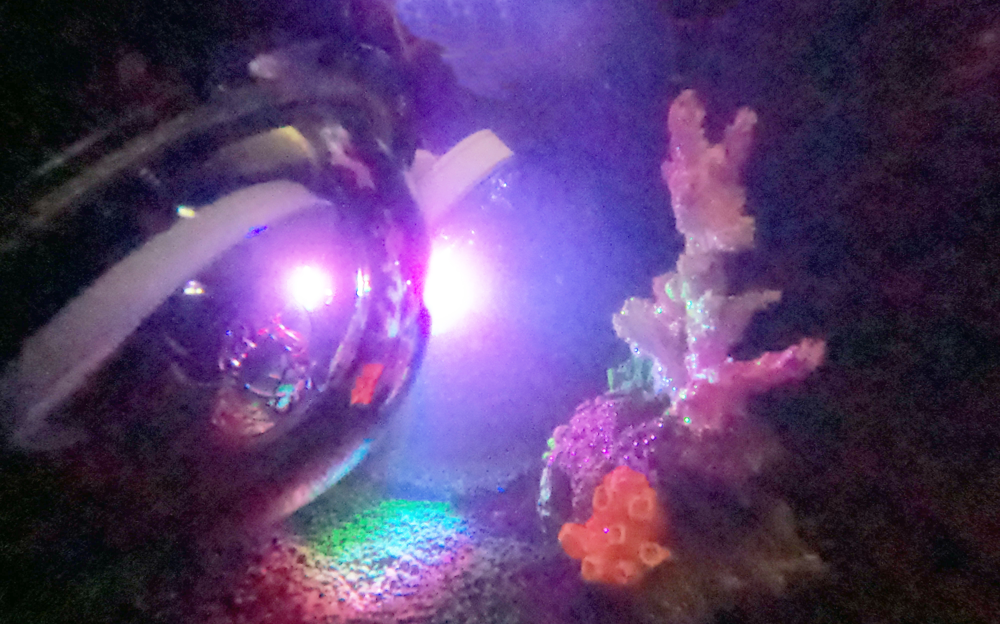

About me
I am a researcher and engineer interested in developing new technologies that expand how we sense, communicate with, and interact with the physical world. My work lies at the intersection of wireless systems, signal processing, applied physics, and hardware-software system design. I am particularly interested in bridging fundamental theory and practical engineering to build systems that overcome existing technological limitations and enable new applications.
I am currently an R&D Engineer at Apple, where I work on next-generation wireless power technologies. Prior to joining Apple, I received my Ph.D. in Electrical Engineering and Computer Science and my M.S. from MIT, where I was part of the Signal Kinetics research group led by Prof. Fadel Adib. I have also held internships at Microsoft Research in Redmond and Cambridge Mobile Telematics in Cambridge.
Publications
Backscatter Theory & Modeling

Underwater Backscatter Networking for Subsea IoT: A Link-Budget Analysis in Practical Ocean Channels
W. Akbar, A. Allam, F. Adib
IEEE Journal of Oceanic Engineering, 2025

Underwater Backscatter: What is its Practical Communication Distance?
W. Akbar, A. Allam, F. Adib
ACM GetMobile, 2024
The Underwater Backscatter Channel: Theory, Link Budget, and Experimental Validation
W. Akbar*, A. Allam*, F. Adib
ACM MobiCom, 2023 · Best Paper Award; ACM SIGMOBILE Research Highlight

Demo: Underwater Backscatter Link Budget Tool
A. Allam*, W. Akbar*, F. Adib
ACM SIGCOMM, 2023

An Analytical Framework for Low-Power Underwater Backscatter Communications
A. Allam, W. Akbar, F. Adib
Journal of the Acoustical Society of America, 2023 · Abstract
Low-Power Sensing & Communication

Bringing All Modulations to Underwater Backscatter via PDM-Synthesis
W. Akbar, A. Allam, N. Naeem, F. Adib
ACM/IEEE SenSys, 2026 · Best Paper Runner-Up

Piezo-Ultrasonic Backscatter: Low-Power High Throughput Underwater Networking
P. Wang, W. Chen, W. Akbar, F. Adib
ACM/IEEE SenSys, 2026

Enabling Long-Range Underwater Backscatter via Van Atta Acoustic Networks
A. Eid, J. Rademacher, W. Akbar, P. Wang, A. Allam, F. Adib
ACM SIGCOMM, 2023

Towards Battery-Free Machine Learning and Inference in Underwater Environments
Y. Zhao, S. S. Afzal, W. Akbar, O. Rodriguez, F. Mo, D. Boyle, F. Adib, H. Haddadi
ACM HotMobile, 2022

Enabling Higher-Order Modulation for Underwater Backscatter Communication
S. S. Afzal, R. Ghaffarivardavagh, W. Akbar, O. Rodriguez, F. Adib
IEEE/MTS OCEANS, 2020
Imaging & Perception

Wave-Former: Through-Occlusion 3D Reconstruction via Wireless Shape Completion
L. Dodds, M. Lam, W. Akbar, Y. Cheng, F. Adib
IEEE/CVF CVPR, 2026

Demo: Enabling Battery-Free Wireless Underwater Imaging
J. Rademacher, W. Akbar, S. S. Afzal, O. Rodriguez, N. Naeem, P. Wang, M. Doumet, U. Ha, R. Ghaffarivardavagh, F. Adib
ACM WUWNet, 2022 · Best Demo Award

Battery-free Wireless Imaging of Underwater Environments
S. S. Afzal*, W. Akbar*, O. Rodriguez*, M. Doumet, U. Ha, R. Ghaffarivardavagh, F. Adib
Nature Communications, 2022
Honors & awards
- ACM/IEEE SenSys Best Paper Runner-Up Award, 2026
- ACM SIGMOBILE Research Highlight, 2026
- MathWorks Engineering Fellowship, MIT School of Engineering, 2025–2026
- ACM MobiCom Best Paper Award, 2023
- MIT $100K Entrepreneurship Competition, Finalist and Runner-Up (Sensea team), 2023
- ACM WUWNet Best Demo Award, 2022
- Nature Electronics Research Highlight, 2022
- NMF Gold Medal, LUMS, 2020